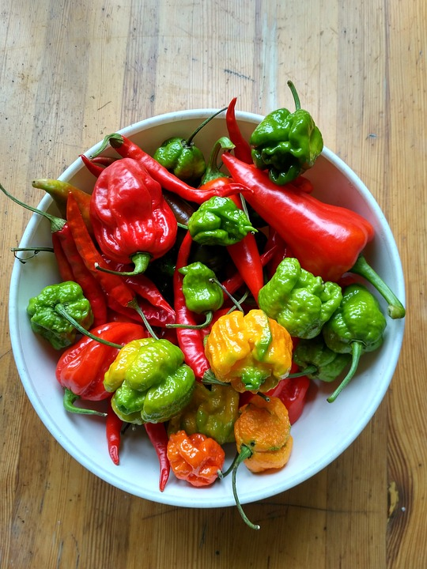

Plantar guindillas o chiles
Como hacer que germine
Necesitamos
- Semillas
- Tierra
- Maseta pequeña

Los pasos son muy sencillos
Rellenamos la maseta hasta 3/4 de su capacidad con tierra. Intentando poner como mínimo 4 semillas y como máximo 8, miraremos de que queden un poco separadas entre ellas, luego cubriremos con un poco de tierra, con cuidado de dejar un espacio para que pueda quedar agua hasta que la absorba la tierra. El siguiente paso es mirar regar cada día o cada tercer día, la tierra no debe estar seca., El brote tarda aproximadamente de un a dos semanas en salir, paciencia.